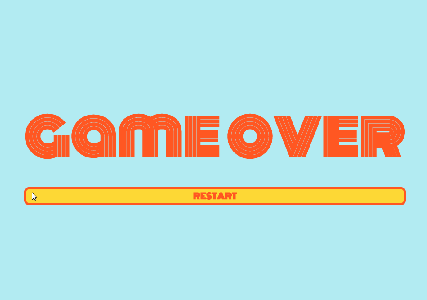
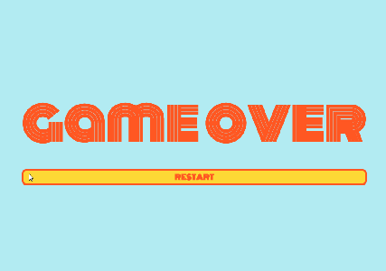

Projects
I am currently working on a second portfolio. This portfolio (rather than my first portfolio) was more enjoyable to create because of all of the "toys" I had access to with Bootstrap. However, having Bootstrap meant more coding as well. Overall, though, I enjoyed working on my second portfolio.
Although this is only my second portfolio, there is a very visible difference between the style of Portfolio 1 and the style of Portfolio 2. As I stated above, Bootstrap was very helpful in the process of creating my second portfolio as well as disadvantageous in the way that it required more complex coding. Portfolio 1 was much easier to code than Portfolio 2, though Portfolio 2 looks much more professional. But I guess it's beauty before pain, right?
 

Snake is a game that is originally from the 1970s, but our class had a chance to create our own snake games. While some chose to create their own style for the game, I chose to put a modern twist on 70s style.
Mario is another game that the class learned to create, based on Nintendo's "Super Mario".